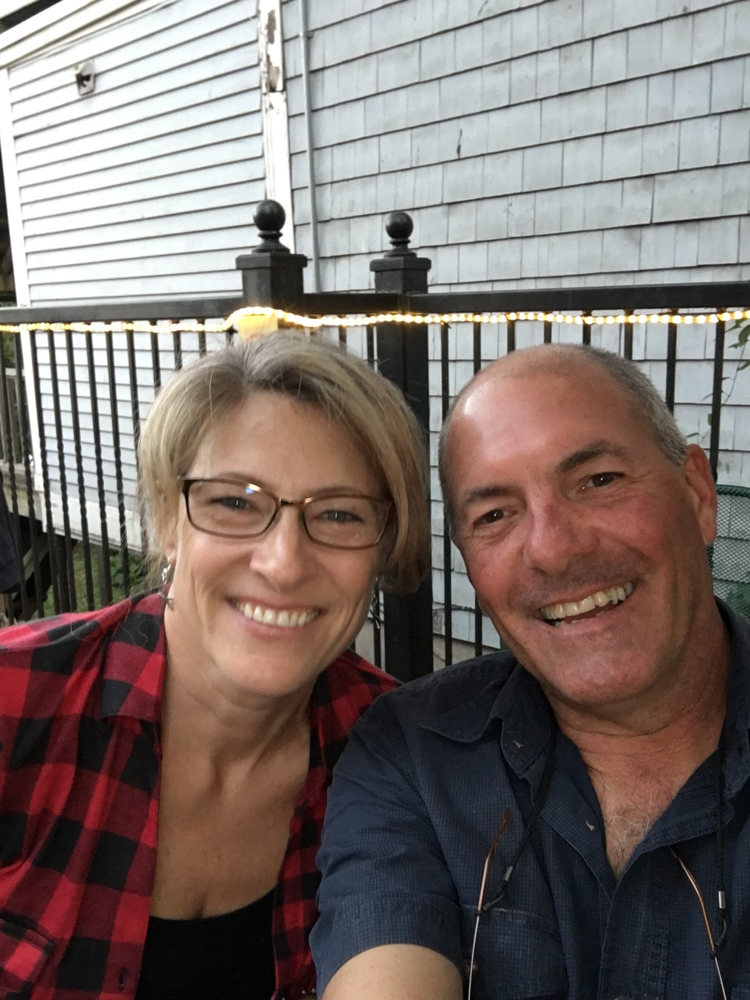

ABOUT US
Travel with the comforts of home...
Nestled in the small town of West Gardiner, Maine.
Rosewood Lodging offers ten very comfortable and fully furnished rooms, for short and
extended stay, for travelling medical and business professionals. Amenities include smart TV's, hard wired Ethernet
connections & WiFi, private 1⁄2 baths, a laundry room, and an open kitchen is available for those who
enjoy cooking themselves or choose one of our local grocers who prepare home cooked meals.
